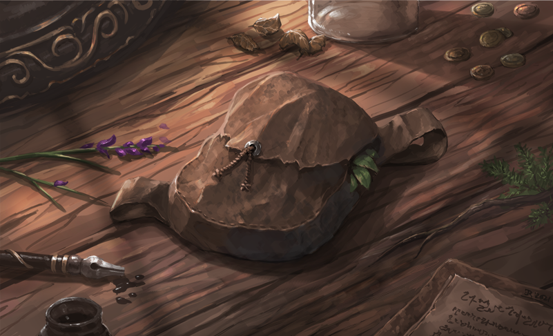
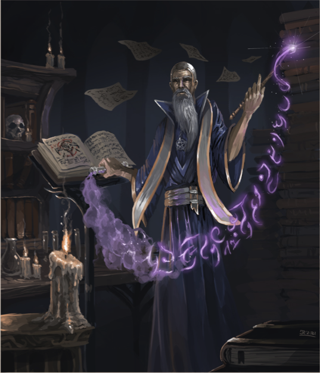

GENERAL ATTRIBUTES
Attributes are a creature's ability to affect their surroundings and be affected by the world's obstacles. Such examples are how quickly or nimbly a character may move or how many wounds they can take before they are downed.
WORLD SIZE
TILE SIZE
Size represents the approximation of how much space a creature or object takes upon the field, be it through height or width. This is generalized into categories that can be fitted upon Avorkarth's tile system. Each tile represents about 1.5 meters or -5 feet.
A medium creature such as a human takes up 1 tile, being approximately 1.5 meters tall. A large creature such as an ogre takes up 4 tiles (2x2).
SIZE CATEGORIES
A creature's placement upon the field is based upon their approximate size as noted above. These categories offer different bonuses and penalties.
| SIZE | SPACE | REACH |
|---|---|---|
| Diminuative | 10 per tile | Same tile |
| Tiny | 4 per tile | Same tile |
| Small | 2 per tile | 1 tile |
| Medium | 1-3 tiles | 1 tile |
| Large | 4+ tiles (2x2) | 2-3 tiles |
| Huge | 16+ tiles (4x4) | 4-6 tiles |
| Gargantuan | 49+ tiles (7x7) | 7-11 tiles |
| Colossal | 144+ tiles (12x12) | 12-24 tiles |
| Titanic | 625+ tiles (25X25) | 25+ tiles |
- Pixie (Diminuative)
- House Cat (Tiny)
- Falgrii (Small)
- Human (Medium)
- Hill Ogre (Large)
- Echovale Hydra (Huge)
- Dune Wurm (Gargantuan)
- Adult Dragon (Colossal)
GENERAL ATTRIBUTES
PLACING
SIZE SHAPES
While size dictates the overall space that a creature takes, not all large creatures are shaped the same way. As such a large creature does necessarily have to be 2x2 or 3x3 tiles. As long as the number of occupied tiles are between 4 and 15, it'd be considered a large creatue, as seen below.
Hectrea are deadly large creatures (2x3), their long tusked face allowing allowing them to charge their prey head on.
LONG SHAPES
Some creatures, such as snakes, sirens or lillends have a long tail section. Their sections are shown as separate tokens which must be connected up to the first body/head token. Each square chosen counts as a tail section.
}}Thresher sirens are fierce predators while underwater or within the air, but their long finned tail meant for swimming makes them quite vulnerable while grounded.
POSITIONING (FRONT/FLANK/REAR)
Most creatures can only face a single direction at a time. This is their front, which allows for them to fully use their dodge defense. If they are attacked from the sides, that would be the flank, which gives penalties and at worse, they are attacked from the back. For creatures with a tail, attacking any part of the tail is counted as attacking their back.
A creature's front is always dictated by the direction of the token.
VISION
Vision, or sight, is a character's ability to see properly depending on the amount of light that is currently available.
LIGHT CATEGORIES
The amount of light can truly vary between areas however is simplified and categorized as follows.
Daylight : Typical vision in daylight can go for miles on end and is only interrupted by line of sight, or is limited if a creature is light sensitive.
Partial Light : While under a moonlit night or carrying only a simple candle, many creatures are limited in their vision. Normal vision based creatures have a hard time seeing far under circumstances of partial light.
Darkness : Vision fails completely while in complete darkness, most often while delving in depths of ancient cave systems or wandering in underground adventures. When there is no light, characters with normal vision are considered blind, taking even greater penalties.
Vision PENALTIES
When a character's vision is not fully compatible with the amount of light available, they take certain penalties.
Blurred : The least harmful penalty, blurred vision makes the character take -1 to all values of physical actions per distance threshold, including combat and skill checks up to -5.
Strained : Should a character only be able to see general shapes, they take -2 to all values of physical actions per distance threshold up to -10.
Blind : If a character is blind, they must rely on their other senses. Whenever a blind character wishes to do a physical action, they must first roll a die to see if they are even facing the right way.
- On a 1-4 the action critically fails.
- On a 5 the action fails automatically.
- On a roll of 6, the original action may be rolled although with -10 to the value and -1 to the die's result.
GENERAL ATTRIBUTES
LIFTING CAPACITY
Upon journeys and adventures, characters are often burdened with travelling gear, treasures or strange items of various usefulness. However, characters can only lift so much, their strength determining their maximal weight allowance, including the gear currently worn.
LIFTING CAPACITY
Lifting capacity determines the total amount of objects upon the character and when they suffer penalties for carrying too much. These are separated into multiple general categories and increased by the character's strength. However, no matter a character's strength, their carrying amount is unfortunately still limited by their size. A character may only carry so many items of certain sizes. Note that worn armour and clothing does NOT count towards this capacity, but worn items such as swords and backpacks do.
CARRY WEIGHT CATEGORIES/PENALTIES
Light Load or lower : A character below their light load is carrying a comfortable amount of things and there are no penalties associated to it. A character that can fly must be in their Light Load to fly.
Light to Medium Load : A character within their light load finds themselves a bit limited in their agile based movements. | - 1 to all Dodge, Movement and Agility based actions and skills.
Medium to Heavy Load : A character within their medium load finds themselves quite limited in their agile movements. | Halve all Dodge, Movement and Agility based actions and skills.
Heavy to Maximum Load : A character within their heavy load is carrying too much to move properly and is heavily burdened. | Dodge and Movement are reduced to 1, can only use non-movement based actions and skills. | Reduce actions per turn to 1.
Maximum Lift : The final state of lifting capacity is what the character can barely lift, but not carry with them. | Cannot move or take any action.
"The burden of adventure is not always in gold, for there are treasures of much greater value to be found.” - The Chronicler
LIFTING CAPACITY
To know what are the limits to the character's carrying capacities one must look at one's own strength and size category.
ITEM SIZE/CARRY AMOUNT
| SIZE | NO LOAD | LIGHT | MEDIUM | HEAVY | MAXIMUM |
|---|---|---|---|---|---|
| TINY | 9 | 18 | 27 | 54 | 162 |
| SMALL | 3 | 6 | 9 | 18 | 54 |
| STANDARD | 1 | 2 | 3 | 6 | 9 |
| LARGE | - | - | 1 | 2 | 3 |
| MASSIVE | - | - | - | - | 1 |
ALL THINGS RELATIVE
Items sizes are relative to the character size. What is a standard longsword for a human is a large item for a falgrii. Item size categories increase by 1 per the character's relative size difference.
STRENGTH BONUS
A character's strength also increases the amount of items allowed held. This is increased at 1 tiny item more per strength. Therefore, 1 small item per 3 strength, 1 standard item per 9 strength, 1 large item per 18 strength and 1 massive item per 54 strength.
GENERAL ATTRIBUTES
LANGUAGES
Most civilized cultures throughout the realm of creation have eventually created their own specialized forms of audible communication. These languages are often complex vocalizations unique to their species, although this does not mean one of a different species cannot learn them.
STARTING LANGUAGES
Each species in the lorebook has their own starting languages. These are given freely upon character creation and do not require any language points to learn.
ADDITIONAL LANGUAGES
Should a character wish to learn additional languages over the ones they begin with, they may do so between campaigns or at character creation. (It takes time to learn a language.)
LANGUAGE LEVELS
The common link between all languages is the progression of learning. Each language has a few states, or levels, of complexity and are as follows.
(1) Understand : The character understands the essentials of what others say, but cannot speak the language themself.
(2) Speak : The character can speak simple sentences and can make themselves understood, although without any complex thoughts.
(3) Read/write simple : The character can speak the language perfectly, but hasn't quite grasped the writing. The writing and reading is mostly phonetic.
(4) Read/write complex : The character can write, read and speak the language perfectly.
COMPLEXITY/RARITY
The rarer a language, the harder it is to find a teacher, and the more complex a language, the greater the understanding of basic rules is required. This is reflected in how many language points are required to learn the language.
While each language's complexity is specific to itself, the rarity of said languages are categorized. The languge cost increases significantly per category and are as follows :
Common : Common languages are spoken throughout the midlands and are used everyday by most common species.
Odd : Odd languages are still heard throughout the midlands, although not nearly as often, usually getting a strange look from others.
Rare : Rare languages are heard infrequently unless in certain specific areas of the midlands due to their rarity.
Fabled : Fabled languages are, as is implied, often associated with fables of old and many don't even believe that these languages exist.
Mythical : There are only a few mythical langauges, and these carry power in each and every word. Mythical languages cannot be learned without magical aptitude.
LEARNING LANGUAGES/LANGUAGE POINTS
The amount of language points a character has is dependant on three aspects; the character's intelligence, the character's mastery and the character's backstory. (See the Mastery section).
Mastery : Characters may spend their mastery on language points. This is the main way to gain language points, and it is modified by the character's intelligence.
Intelligence : Characters of greater intelligence have an easier time grasping languages over their years. For each point of intelligence, reduce the years required for a mastery point by i per intelligence point, to a minimum of 1 per point.
Backstory (Optional) : If a character requires a language to match their backstory, but doesn't have the intelligence or age to match it, they may ask the Game Master if it's ok. Keep in mind that an overloaded character isn't always fun for other players.
"Tis ever fascinating to me, on the subject of languages that is. The further back you go, the more lyrical they seem to be. Quite intriguing, wouldn't you say?" - Langdar the Sorcerer
GENERAL ATTRIBUTES
RENOWN - (OPTIONAL)
Renown is a passive attribute meant as a method for the Game Master to track how certain creatures or other non-playalbe characters would react to the players. Renown is usually linked to factions, races and species, although if a Game Master wishes, or for simpler short campigns, they can simply reduce it to a per species basis.
REPUTATION
Reputation is simply put as how well your character is valued. This doesn't affect how well known your character is, it only tells how others of a species, race or faction will react upon seeing your character. Note that reputation can be split from the specific to the overall, and that is where fame helps out.
FAME
Fame shows how well a character is known within the realm of Avokrarth, be they famous or infamous. The greater the fame, the more likely the character is to be recognized, even if it's only for the city guards to quickly try to lock them up.
For example, a harpy character can be well liked by a human village they helped save from a maurauding orc band, but they would still be quickly hunted or chased out by humans of another area who know not of their heroic act.

“Bonus Text!”
REPUTATION LISTS
These are the list of reputations for the given campaign, be it a person or a faction. It is the Game Master's duty to create a reputation list for the campaign they create, and to let players know of them as they are encountered. Note that all species in the rulebook have a general reputation list to give players a good idea of race relations.
SPECIFIC VS. SPECIES REPUTATION
While individuals can be influenced and learn to trust or even admire those not of their own kind, the overall special reputations never change. This is due to it being an average and reasonable guess of how memebers of that species will react in response of meeting another.
Compare this with a character's reputation with a guild or a particular caste, where the members would be told of the character, including their appearance and past actions. This would make them either more reasonable or aggressive, depending on the character's reputation and fame.
RENOWN TITLES
Together, fame and reputation gives a title of sorts for each faction one encounters, telling how they would react to the character. While reputation dictates the direction of the chart (kindness at positive numbers and suspicion for negative numbers), fame dictates the distance from neutral and actual number.
| Worshipped Revered Honoured | Serve without Question |
| Admired Respected Trusted | Aid on Sight |
| Friendly Accepted Tolerated | Open to Aid |
| Neutral | Neutral |
| Doubted Distrusted Hostile | On Guard |
| Hated Reviled Hunted | Attack on Sight |
| Feared Dreaded Terrified | Attack/Flee on Sight |